R for Psychologists - part II
ggplotting and long data
R for Psychologists - part III: Getting SPSS data into R, doing some data wrangling (altering the data), plotting, and running a simple linear model . Part II: Plotting in R through ggplot2 really is a way to understand how to organise and alter data in R to suit your needs .
It’s been a very long time since I wrote anything. Life has been unexpectedly overwhelming for a period, still is I guess, but one musters on. I’m sitting in old town Fredrikstad while my cat is getting some tests at the vets’, so I finally get some time and want to write something here. And we will continue with some R for Psychologists.
I my first R for Psychologists post we really dove into it.
I very quickly covered getting SPSS data into R, doing some data wrangling (altering the data), plotting, and running a simple linear model.
That was really quite the mountful of topics to cover.
In this part, I’ll take you more through plotting.
You might think that is a weird place to dive into more, but there are perfectly good reasons for it (aside from me loving to make pretty plots).
Plotting in R through ggplot2 really is a way to get to understand how to organise and alter data in R to suit your needs.
Getting data into the correct shape, with variables correctly made in to numerics, categorical (factors) etc. is very important.
Not only does it affect how your plots end up, but will also dictate how your analyses work out.
Just as in SPSS, data need to have the correct types or classes in order for the analyses to work correctly.
Let’s stars by opening the R-project we started with last time.
If you have not been working in R since the last tutorial, you should be able to open RStudio, and our project will open immediately, and your script from last time should already be ready for you to work with.
Otherwise, either navigate to the folder where your project was made and click on the Rproj-file, or in the top right corner of RStudio, click the drop-down menu next to the R-project icon and select the R-start project.
Our script from last time should look something like this:
library(rio)
library(tidyverse)
# Start with importing the data
eData = rio::import("SPSS/experim.sav") %>%
# then recode sex to Male and Female
mutate(
sex = factor(sex, labels=c("Male","Female")),
id = factor(id))
# Gather depression variables into a tall depression data format.
eData_tall = eData %>%
gather(time, depress, c("depress1", "depress2", "depress3")) %>%
mutate(time = as.integer(gsub("[[:alpha:]]","",time))) %>%
arrange(id)
# Do a linear regression on depression over time
lm(depress~time, data=eData_tall) %>%
broom::tidy()
# plot the regression
eData_tall %>%
ggplot(aes(x=time, y=depress)) +
geom_jitter() +
geom_smooth(method="lm")
In this script we have already some both a plot (ggplot) and some data
wrangling (mutate).
Ggplotting
ggplot2 is a very powerful package for making plots.
People who are used to plotting in SPSS or in base-R, find it hard to understand.
I did to in the beginning, and it tok me some time before I understood how it works and how to make my data into the shape that it needs for the plots to end up just as I like them.
I know many researchers that will make simple plots in R or excel, and then get the plots into some vector program like Photoshop or Inkscape to make them exactly as they like.
I did that too for a long time, but now I try to make sure my plots are reproduciably made through R, without the need for tweaking later so it looks nice and correct.
Let’s face it, that stuff takes a lot of time, and needs to be fixed with almost every co-author comment and review.
So much time spent fixing.
But as I said last time, it takes time to get good enough in R to not need that step, and making the scripts also takes time. There are no quick-fix solutions, but I believe R makes the fixes faster, as they will be minor tweaks, or if new data comes in, just load the new data, and rerun, and presto all the plots are updated.
Anyway, let’s get into it. Lets have a look at the plot from last time, at the end of our script.
# plot the regression
eData_tall %>%
ggplot(aes(x=time, y=depress)) +
geom_jitter() +
geom_smooth(method="lm")
## `geom_smooth()` using formula 'y ~ x'
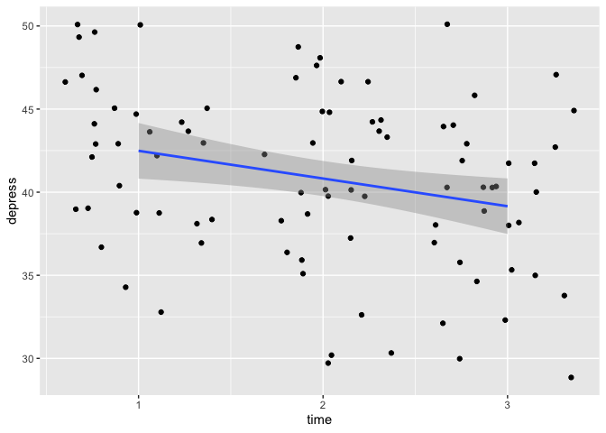
Alrighty, we have the individual data points for depression (y-axis) at each timepoint (x-axis) for all individuals as the scatter plot, and a regression-line fitted to that data.
To reiterate what the code is doing: “Take eData_tall, plot with time on the x-axis, depress on the y-axis, create a scatter plot with a little bit of random noise, and add a regression line using a linear model.”
Let’s break that down a little bit by looking at the data again.
eData_tall %>%
glimpse()
## Rows: 90
## Columns: 17
## $ id <fct> 1, 1, 1, 2, 2, 2, 3, 3, 3, 4, 4, 4, 5, 5, 5, 6, 6, 6, 7, 7, …
## $ sex <fct> Male, Male, Male, Male, Male, Male, Male, Male, Male, Male, …
## $ age <dbl> 19, 19, 19, 21, 21, 21, 30, 30, 30, 23, 23, 23, 26, 26, 26, …
## $ group <dbl> 1, 1, 1, 2, 2, 2, 1, 1, 1, 2, 2, 2, 1, 1, 1, 2, 2, 2, 1, 1, …
## $ fost1 <dbl> 32, 32, 32, 37, 37, 37, 47, 47, 47, 50, 50, 50, 44, 44, 44, …
## $ confid1 <dbl> 20, 20, 20, 29, 29, 29, 11, 11, 11, 15, 15, 15, 17, 17, 17, …
## $ fost2 <dbl> 28, 28, 28, 36, 36, 36, 42, 42, 42, 48, 48, 48, 37, 37, 37, …
## $ confid2 <dbl> 25, 25, 25, 30, 30, 30, 16, 16, 16, 16, 16, 16, 20, 20, 20, …
## $ fost3 <dbl> 23, 23, 23, 34, 34, 34, 41, 41, 41, 45, 45, 45, 32, 32, 32, …
## $ confid3 <dbl> 30, 30, 30, 34, 34, 34, 20, 20, 20, 14, 14, 14, 26, 26, 26, …
## $ exam <dbl> 82, 82, 82, 90, 90, 90, 60, 60, 60, 52, 52, 52, 70, 70, 70, …
## $ mah_1 <dbl> 0.3469978, 0.3469978, 0.3469978, 10.2401804, 10.2401804, 10.…
## $ DepT1gp2 <dbl> 0, 0, 0, 1, 1, 1, 0, 0, 0, 0, 0, 0, 1, 1, 1, 0, 0, 0, 0, 0, …
## $ DepT2Gp2 <dbl> 0, 0, 0, 1, 1, 1, 0, 0, 0, 0, 0, 0, 1, 1, 1, 0, 0, 0, 0, 0, …
## $ DepT3gp2 <dbl> 0, 0, 0, 1, 1, 1, 0, 0, 0, 0, 0, 0, 0, 0, 0, 0, 0, 0, 0, 0, …
## $ time <int> 1, 2, 3, 1, 2, 3, 1, 2, 3, 1, 2, 3, 1, 2, 3, 1, 2, 3, 1, 2, …
## $ depress <dbl> 44, 43, 40, 50, 47, 45, 43, 43, 43, 44, 44, 40, 46, 47, 42, …
So time is an integer with three values (1-3) and depress is a double precision number with a depression score.
Again, notice how in the id column, the subject identifiers are repeated in three rows, last time we made this long dataset where participants had as many rows as number of time observations.
This is a very convenient way of working with data, and while it might take a little time to get used to, it does make a lot of sense.
When you have data repeating over time, the same data repeated over time, it is easier to get an overview of in long format so you dont need to scroll sideways and loose your navigation points (id) too easily.
Now,last time, we only made depress into long format. But techincally, most of the data in this dataset is repeated, and thankfully named in such a way that it is quite easy for us to reshape the data. When we have done this, we can make some really nice plots too!
Reshape the data
We’ll go back to the original eData file for this.
eData %>% glimpse()
## Rows: 30
## Columns: 18
## $ id <fct> 4, 10, 9, 3, 12, 11, 6, 5, 8, 13, 14, 1, 15, 7, 2, 27, 25, 1…
## $ sex <fct> Male, Male, Male, Male, Male, Male, Male, Male, Male, Male, …
## $ age <dbl> 23, 21, 25, 30, 45, 22, 22, 26, 23, 21, 23, 19, 23, 19, 21, …
## $ group <dbl> 2, 2, 1, 1, 2, 1, 2, 1, 2, 1, 2, 1, 1, 1, 2, 1, 1, 1, 2, 1, …
## $ fost1 <dbl> 50, 47, 44, 47, 46, 39, 32, 44, 40, 47, 38, 32, 39, 36, 37, …
## $ confid1 <dbl> 15, 14, 12, 11, 16, 13, 21, 17, 22, 20, 28, 20, 21, 24, 29, …
## $ depress1 <dbl> 44, 42, 40, 43, 44, 43, 37, 46, 37, 50, 39, 44, 47, 38, 50, …
## $ fost2 <dbl> 48, 45, 39, 42, 45, 40, 33, 37, 40, 45, 37, 28, 35, 32, 36, …
## $ confid2 <dbl> 16, 15, 18, 16, 16, 20, 22, 20, 23, 25, 27, 25, 26, 28, 30, …
## $ depress2 <dbl> 44, 42, 40, 43, 45, 42, 36, 47, 37, 48, 36, 43, 47, 35, 47, …
## $ fost3 <dbl> 45, 44, 36, 41, 43, 39, 32, 32, 40, 46, 32, 23, 35, 30, 34, …
## $ confid3 <dbl> 14, 18, 19, 20, 20, 22, 23, 26, 26, 27, 29, 30, 30, 32, 34, …
## $ depress3 <dbl> 40, 40, 38, 43, 43, 38, 35, 42, 35, 46, 34, 40, 47, 35, 45, …
## $ exam <dbl> 52, 55, 58, 60, 58, 62, 59, 70, 60, 70, 72, 82, 79, 80, 90, …
## $ mah_1 <dbl> 0.5699842, 1.6594031, 3.5404715, 2.4542143, 0.9443036, 1.625…
## $ DepT1gp2 <dbl> 0, 0, 0, 0, 0, 0, 0, 1, 0, 1, 0, 0, 1, 0, 1, 1, 0, 1, 0, 0, …
## $ DepT2Gp2 <dbl> 0, 0, 0, 0, 1, 0, 0, 1, 0, 1, 0, 0, 1, 0, 1, 0, 0, 1, 0, 0, …
## $ DepT3gp2 <dbl> 0, 0, 0, 0, 0, 0, 0, 0, 0, 1, 0, 0, 1, 0, 1, 0, 0, 0, 0, 0, …
Notice that in the dataset, all variables that are repeated have a number in their variable name, except mah_1 which is not repeated, but we can work with that.
This logic helps us a lot, as it will make it possible for us to wrangle the data into shape using that logic.
As we did last time, we will use the gather function from tidyverse to make the data long, and use the logic of numbers in the column names to helps to get the data into shape.
eData %>%
gather(colName, value, matches("[123]"))
## Warning: attributes are not identical across measure variables;
## they will be dropped
## id sex age group exam colName value
## 1 4 Male 23 2 52 fost1 50.0000000
## 2 10 Male 21 2 55 fost1 47.0000000
## 3 9 Male 25 1 58 fost1 44.0000000
## 4 3 Male 30 1 60 fost1 47.0000000
## 5 12 Male 45 2 58 fost1 46.0000000
## 6 11 Male 22 1 62 fost1 39.0000000
## 7 6 Male 22 2 59 fost1 32.0000000
## 8 5 Male 26 1 70 fost1 44.0000000
## 9 8 Male 23 2 60 fost1 40.0000000
## 10 13 Male 21 1 70 fost1 47.0000000
## 11 14 Male 23 2 72 fost1 38.0000000
## 12 1 Male 19 1 82 fost1 32.0000000
## 13 15 Male 23 1 79 fost1 39.0000000
## 14 7 Male 19 1 80 fost1 36.0000000
## 15 2 Male 21 2 90 fost1 37.0000000
## 16 27 Female 20 1 56 fost1 41.0000000
## 17 25 Female 24 1 53 fost1 38.0000000
## 18 19 Female 27 1 59 fost1 42.0000000
## 19 18 Female 23 2 64 fost1 44.0000000
## 20 23 Female 22 1 63 fost1 32.0000000
## 21 21 Female 46 1 64 fost1 39.0000000
## 22 26 Female 19 2 63 fost1 42.0000000
## 23 29 Female 22 1 67 fost1 37.0000000
## 24 17 Female 37 1 71 fost1 41.0000000
## 25 20 Female 32 2 73 fost1 43.0000000
## 26 28 Female 30 2 80 fost1 46.0000000
## 27 22 Female 25 2 83 fost1 30.0000000
## 28 24 Female 21 2 85 fost1 33.0000000
## 29 16 Female 45 2 78 fost1 40.0000000
## 30 30 Female 21 2 84 fost1 39.0000000
## 31 4 Male 23 2 52 confid1 15.0000000
## 32 10 Male 21 2 55 confid1 14.0000000
## 33 9 Male 25 1 58 confid1 12.0000000
## 34 3 Male 30 1 60 confid1 11.0000000
## 35 12 Male 45 2 58 confid1 16.0000000
## 36 11 Male 22 1 62 confid1 13.0000000
## 37 6 Male 22 2 59 confid1 21.0000000
## 38 5 Male 26 1 70 confid1 17.0000000
## 39 8 Male 23 2 60 confid1 22.0000000
## 40 13 Male 21 1 70 confid1 20.0000000
## 41 14 Male 23 2 72 confid1 28.0000000
## 42 1 Male 19 1 82 confid1 20.0000000
## 43 15 Male 23 1 79 confid1 21.0000000
## 44 7 Male 19 1 80 confid1 24.0000000
## 45 2 Male 21 2 90 confid1 29.0000000
## 46 27 Female 20 1 56 confid1 16.0000000
## 47 25 Female 24 1 53 confid1 14.0000000
## 48 19 Female 27 1 59 confid1 15.0000000
## 49 18 Female 23 2 64 confid1 13.0000000
## 50 23 Female 22 1 63 confid1 22.0000000
## 51 21 Female 46 1 64 confid1 21.0000000
## 52 26 Female 19 2 63 confid1 13.0000000
## 53 29 Female 22 1 67 confid1 28.0000000
## 54 17 Female 37 1 71 confid1 29.0000000
## 55 20 Female 32 2 73 confid1 17.0000000
## 56 28 Female 30 2 80 confid1 20.0000000
## 57 22 Female 25 2 83 confid1 24.0000000
## 58 24 Female 21 2 85 confid1 12.0000000
## 59 16 Female 45 2 78 confid1 22.0000000
## 60 30 Female 21 2 84 confid1 21.0000000
## 61 4 Male 23 2 52 depress1 44.0000000
## 62 10 Male 21 2 55 depress1 42.0000000
## 63 9 Male 25 1 58 depress1 40.0000000
## 64 3 Male 30 1 60 depress1 43.0000000
## 65 12 Male 45 2 58 depress1 44.0000000
## 66 11 Male 22 1 62 depress1 43.0000000
## 67 6 Male 22 2 59 depress1 37.0000000
## 68 5 Male 26 1 70 depress1 46.0000000
## 69 8 Male 23 2 60 depress1 37.0000000
## 70 13 Male 21 1 70 depress1 50.0000000
## 71 14 Male 23 2 72 depress1 39.0000000
## 72 1 Male 19 1 82 depress1 44.0000000
## 73 15 Male 23 1 79 depress1 47.0000000
## 74 7 Male 19 1 80 depress1 38.0000000
## 75 2 Male 21 2 90 depress1 50.0000000
## 76 27 Female 20 1 56 depress1 45.0000000
## 77 25 Female 24 1 53 depress1 42.0000000
## 78 19 Female 27 1 59 depress1 49.0000000
## 79 18 Female 23 2 64 depress1 39.0000000
## 80 23 Female 22 1 63 depress1 39.0000000
## 81 21 Female 46 1 64 depress1 44.0000000
## 82 26 Female 19 2 63 depress1 43.0000000
## 83 29 Female 22 1 67 depress1 33.0000000
## 84 17 Female 37 1 71 depress1 39.0000000
## 85 20 Female 32 2 73 depress1 47.0000000
## 86 28 Female 30 2 80 depress1 38.0000000
## 87 22 Female 25 2 83 depress1 45.0000000
## 88 24 Female 21 2 85 depress1 50.0000000
## 89 16 Female 45 2 78 depress1 45.0000000
## 90 30 Female 21 2 84 depress1 34.0000000
## 91 4 Male 23 2 52 fost2 48.0000000
## 92 10 Male 21 2 55 fost2 45.0000000
## 93 9 Male 25 1 58 fost2 39.0000000
## 94 3 Male 30 1 60 fost2 42.0000000
## 95 12 Male 45 2 58 fost2 45.0000000
## 96 11 Male 22 1 62 fost2 40.0000000
## 97 6 Male 22 2 59 fost2 33.0000000
## 98 5 Male 26 1 70 fost2 37.0000000
## 99 8 Male 23 2 60 fost2 40.0000000
## 100 13 Male 21 1 70 fost2 45.0000000
## 101 14 Male 23 2 72 fost2 37.0000000
## 102 1 Male 19 1 82 fost2 28.0000000
## 103 15 Male 23 1 79 fost2 35.0000000
## 104 7 Male 19 1 80 fost2 32.0000000
## 105 2 Male 21 2 90 fost2 36.0000000
## 106 27 Female 20 1 56 fost2 40.0000000
## 107 25 Female 24 1 53 fost2 37.0000000
## 108 19 Female 27 1 59 fost2 41.0000000
## 109 18 Female 23 2 64 fost2 39.0000000
## 110 23 Female 22 1 63 fost2 31.0000000
## 111 21 Female 46 1 64 fost2 40.0000000
## 112 26 Female 19 2 63 fost2 38.0000000
## 113 29 Female 22 1 67 fost2 38.0000000
## 114 17 Female 37 1 71 fost2 40.0000000
## 115 20 Female 32 2 73 fost2 36.0000000
## 116 28 Female 30 2 80 fost2 40.0000000
## 117 22 Female 25 2 83 fost2 28.0000000
## 118 24 Female 21 2 85 fost2 29.0000000
## 119 16 Female 45 2 78 fost2 30.0000000
## 120 30 Female 21 2 84 fost2 36.0000000
## 121 4 Male 23 2 52 confid2 16.0000000
## 122 10 Male 21 2 55 confid2 15.0000000
## 123 9 Male 25 1 58 confid2 18.0000000
## 124 3 Male 30 1 60 confid2 16.0000000
## 125 12 Male 45 2 58 confid2 16.0000000
## 126 11 Male 22 1 62 confid2 20.0000000
## 127 6 Male 22 2 59 confid2 22.0000000
## 128 5 Male 26 1 70 confid2 20.0000000
## 129 8 Male 23 2 60 confid2 23.0000000
## 130 13 Male 21 1 70 confid2 25.0000000
## 131 14 Male 23 2 72 confid2 27.0000000
## 132 1 Male 19 1 82 confid2 25.0000000
## 133 15 Male 23 1 79 confid2 26.0000000
## 134 7 Male 19 1 80 confid2 28.0000000
## 135 2 Male 21 2 90 confid2 30.0000000
## 136 27 Female 20 1 56 confid2 14.0000000
## 137 25 Female 24 1 53 confid2 14.0000000
## 138 19 Female 27 1 59 confid2 13.0000000
## 139 18 Female 23 2 64 confid2 20.0000000
## 140 23 Female 22 1 63 confid2 18.0000000
## 141 21 Female 46 1 64 confid2 19.0000000
## 142 26 Female 19 2 63 confid2 20.0000000
## 143 29 Female 22 1 67 confid2 22.0000000
## 144 17 Female 37 1 71 confid2 22.0000000
## 145 20 Female 32 2 73 confid2 26.0000000
## 146 28 Female 30 2 80 confid2 28.0000000
## 147 22 Female 25 2 83 confid2 28.0000000
## 148 24 Female 21 2 85 confid2 20.0000000
## 149 16 Female 45 2 78 confid2 35.0000000
## 150 30 Female 21 2 84 confid2 30.0000000
## 151 4 Male 23 2 52 depress2 44.0000000
## 152 10 Male 21 2 55 depress2 42.0000000
## 153 9 Male 25 1 58 depress2 40.0000000
## 154 3 Male 30 1 60 depress2 43.0000000
## 155 12 Male 45 2 58 depress2 45.0000000
## 156 11 Male 22 1 62 depress2 42.0000000
## 157 6 Male 22 2 59 depress2 36.0000000
## 158 5 Male 26 1 70 depress2 47.0000000
## 159 8 Male 23 2 60 depress2 37.0000000
## 160 13 Male 21 1 70 depress2 48.0000000
## 161 14 Male 23 2 72 depress2 36.0000000
## 162 1 Male 19 1 82 depress2 43.0000000
## 163 15 Male 23 1 79 depress2 47.0000000
## 164 7 Male 19 1 80 depress2 35.0000000
## 165 2 Male 21 2 90 depress2 47.0000000
## 166 27 Female 20 1 56 depress2 44.0000000
## 167 25 Female 24 1 53 depress2 40.0000000
## 168 19 Female 27 1 59 depress2 49.0000000
## 169 18 Female 23 2 64 depress2 30.0000000
## 170 23 Female 22 1 63 depress2 38.0000000
## 171 21 Female 46 1 64 depress2 44.0000000
## 172 26 Female 19 2 63 depress2 39.0000000
## 173 29 Female 22 1 67 depress2 33.0000000
## 174 17 Female 37 1 71 depress2 40.0000000
## 175 20 Female 32 2 73 depress2 45.0000000
## 176 28 Female 30 2 80 depress2 30.0000000
## 177 22 Female 25 2 83 depress2 40.0000000
## 178 24 Female 21 2 85 depress2 48.0000000
## 179 16 Female 45 2 78 depress2 40.0000000
## 180 30 Female 21 2 84 depress2 30.0000000
## 181 4 Male 23 2 52 fost3 45.0000000
## 182 10 Male 21 2 55 fost3 44.0000000
## 183 9 Male 25 1 58 fost3 36.0000000
## 184 3 Male 30 1 60 fost3 41.0000000
## 185 12 Male 45 2 58 fost3 43.0000000
## 186 11 Male 22 1 62 fost3 39.0000000
## 187 6 Male 22 2 59 fost3 32.0000000
## 188 5 Male 26 1 70 fost3 32.0000000
## 189 8 Male 23 2 60 fost3 40.0000000
## 190 13 Male 21 1 70 fost3 46.0000000
## 191 14 Male 23 2 72 fost3 32.0000000
## 192 1 Male 19 1 82 fost3 23.0000000
## 193 15 Male 23 1 79 fost3 35.0000000
## 194 7 Male 19 1 80 fost3 30.0000000
## 195 2 Male 21 2 90 fost3 34.0000000
## 196 27 Female 20 1 56 fost3 38.0000000
## 197 25 Female 24 1 53 fost3 35.0000000
## 198 19 Female 27 1 59 fost3 40.0000000
## 199 18 Female 23 2 64 fost3 34.0000000
## 200 23 Female 22 1 63 fost3 32.0000000
## 201 21 Female 46 1 64 fost3 38.0000000
## 202 26 Female 19 2 63 fost3 36.0000000
## 203 29 Female 22 1 67 fost3 36.0000000
## 204 17 Female 37 1 71 fost3 40.0000000
## 205 20 Female 32 2 73 fost3 34.0000000
## 206 28 Female 30 2 80 fost3 37.0000000
## 207 22 Female 25 2 83 fost3 25.0000000
## 208 24 Female 21 2 85 fost3 25.0000000
## 209 16 Female 45 2 78 fost3 25.0000000
## 210 30 Female 21 2 84 fost3 30.0000000
## 211 4 Male 23 2 52 confid3 14.0000000
## 212 10 Male 21 2 55 confid3 18.0000000
## 213 9 Male 25 1 58 confid3 19.0000000
## 214 3 Male 30 1 60 confid3 20.0000000
## 215 12 Male 45 2 58 confid3 20.0000000
## 216 11 Male 22 1 62 confid3 22.0000000
## 217 6 Male 22 2 59 confid3 23.0000000
## 218 5 Male 26 1 70 confid3 26.0000000
## 219 8 Male 23 2 60 confid3 26.0000000
## 220 13 Male 21 1 70 confid3 27.0000000
## 221 14 Male 23 2 72 confid3 29.0000000
## 222 1 Male 19 1 82 confid3 30.0000000
## 223 15 Male 23 1 79 confid3 30.0000000
## 224 7 Male 19 1 80 confid3 32.0000000
## 225 2 Male 21 2 90 confid3 34.0000000
## 226 27 Female 20 1 56 confid3 18.0000000
## 227 25 Female 24 1 53 confid3 19.0000000
## 228 19 Female 27 1 59 confid3 20.0000000
## 229 18 Female 23 2 64 confid3 22.0000000
## 230 23 Female 22 1 63 confid3 22.0000000
## 231 21 Female 46 1 64 confid3 23.0000000
## 232 26 Female 19 2 63 confid3 23.0000000
## 233 29 Female 22 1 67 confid3 26.0000000
## 234 17 Female 37 1 71 confid3 27.0000000
## 235 20 Female 32 2 73 confid3 28.0000000
## 236 28 Female 30 2 80 confid3 29.0000000
## 237 22 Female 25 2 83 confid3 30.0000000
## 238 24 Female 21 2 85 confid3 30.0000000
## 239 16 Female 45 2 78 confid3 32.0000000
## 240 30 Female 21 2 84 confid3 32.0000000
## 241 4 Male 23 2 52 depress3 40.0000000
## 242 10 Male 21 2 55 depress3 40.0000000
## 243 9 Male 25 1 58 depress3 38.0000000
## 244 3 Male 30 1 60 depress3 43.0000000
## 245 12 Male 45 2 58 depress3 43.0000000
## 246 11 Male 22 1 62 depress3 38.0000000
## 247 6 Male 22 2 59 depress3 35.0000000
## 248 5 Male 26 1 70 depress3 42.0000000
## 249 8 Male 23 2 60 depress3 35.0000000
## 250 13 Male 21 1 70 depress3 46.0000000
## 251 14 Male 23 2 72 depress3 34.0000000
## 252 1 Male 19 1 82 depress3 40.0000000
## 253 15 Male 23 1 79 depress3 47.0000000
## 254 7 Male 19 1 80 depress3 35.0000000
## 255 2 Male 21 2 90 depress3 45.0000000
## 256 27 Female 20 1 56 depress3 40.0000000
## 257 25 Female 24 1 53 depress3 39.0000000
## 258 19 Female 27 1 59 depress3 44.0000000
## 259 18 Female 23 2 64 depress3 30.0000000
## 260 23 Female 22 1 63 depress3 36.0000000
## 261 21 Female 46 1 64 depress3 44.0000000
## 262 26 Female 19 2 63 depress3 37.0000000
## 263 29 Female 22 1 67 depress3 32.0000000
## 264 17 Female 37 1 71 depress3 40.0000000
## 265 20 Female 32 2 73 depress3 42.0000000
## 266 28 Female 30 2 80 depress3 29.0000000
## 267 22 Female 25 2 83 depress3 38.0000000
## 268 24 Female 21 2 85 depress3 50.0000000
## 269 16 Female 45 2 78 depress3 42.0000000
## 270 30 Female 21 2 84 depress3 32.0000000
## 271 4 Male 23 2 52 mah_1 0.5699842
## 272 10 Male 21 2 55 mah_1 1.6594031
## 273 9 Male 25 1 58 mah_1 3.5404715
## 274 3 Male 30 1 60 mah_1 2.4542143
## 275 12 Male 45 2 58 mah_1 0.9443036
## 276 11 Male 22 1 62 mah_1 1.6257058
## 277 6 Male 22 2 59 mah_1 4.1744717
## 278 5 Male 26 1 70 mah_1 1.0261059
## 279 8 Male 23 2 60 mah_1 1.7053103
## 280 13 Male 21 1 70 mah_1 3.0873214
## 281 14 Male 23 2 72 mah_1 2.9140163
## 282 1 Male 19 1 82 mah_1 0.3469978
## 283 15 Male 23 1 79 mah_1 1.5886241
## 284 7 Male 19 1 80 mah_1 1.5076582
## 285 2 Male 21 2 90 mah_1 10.2401804
## 286 27 Female 20 1 56 mah_1 1.1776467
## 287 25 Female 24 1 53 mah_1 1.0564668
## 288 19 Female 27 1 59 mah_1 3.8748910
## 289 18 Female 23 2 64 mah_1 2.7101641
## 290 23 Female 22 1 63 mah_1 3.5488594
## 291 21 Female 46 1 64 mah_1 0.5007192
## 292 26 Female 19 2 63 mah_1 1.4739118
## 293 29 Female 22 1 67 mah_1 9.1295758
## 294 17 Female 37 1 71 mah_1 6.2065842
## 295 20 Female 32 2 73 mah_1 1.7190981
## 296 28 Female 30 2 80 mah_1 1.5015533
## 297 22 Female 25 2 83 mah_1 1.9240376
## 298 24 Female 21 2 85 mah_1 7.5576411
## 299 16 Female 45 2 78 mah_1 1.1884922
## 300 30 Female 21 2 84 mah_1 6.0455901
## 301 4 Male 23 2 52 DepT1gp2 0.0000000
## 302 10 Male 21 2 55 DepT1gp2 0.0000000
## 303 9 Male 25 1 58 DepT1gp2 0.0000000
## 304 3 Male 30 1 60 DepT1gp2 0.0000000
## 305 12 Male 45 2 58 DepT1gp2 0.0000000
## 306 11 Male 22 1 62 DepT1gp2 0.0000000
## 307 6 Male 22 2 59 DepT1gp2 0.0000000
## 308 5 Male 26 1 70 DepT1gp2 1.0000000
## 309 8 Male 23 2 60 DepT1gp2 0.0000000
## 310 13 Male 21 1 70 DepT1gp2 1.0000000
## 311 14 Male 23 2 72 DepT1gp2 0.0000000
## 312 1 Male 19 1 82 DepT1gp2 0.0000000
## 313 15 Male 23 1 79 DepT1gp2 1.0000000
## 314 7 Male 19 1 80 DepT1gp2 0.0000000
## 315 2 Male 21 2 90 DepT1gp2 1.0000000
## 316 27 Female 20 1 56 DepT1gp2 1.0000000
## 317 25 Female 24 1 53 DepT1gp2 0.0000000
## 318 19 Female 27 1 59 DepT1gp2 1.0000000
## 319 18 Female 23 2 64 DepT1gp2 0.0000000
## 320 23 Female 22 1 63 DepT1gp2 0.0000000
## 321 21 Female 46 1 64 DepT1gp2 0.0000000
## 322 26 Female 19 2 63 DepT1gp2 0.0000000
## 323 29 Female 22 1 67 DepT1gp2 0.0000000
## 324 17 Female 37 1 71 DepT1gp2 0.0000000
## 325 20 Female 32 2 73 DepT1gp2 1.0000000
## 326 28 Female 30 2 80 DepT1gp2 0.0000000
## 327 22 Female 25 2 83 DepT1gp2 1.0000000
## 328 24 Female 21 2 85 DepT1gp2 1.0000000
## 329 16 Female 45 2 78 DepT1gp2 1.0000000
## 330 30 Female 21 2 84 DepT1gp2 0.0000000
## 331 4 Male 23 2 52 DepT2Gp2 0.0000000
## 332 10 Male 21 2 55 DepT2Gp2 0.0000000
## 333 9 Male 25 1 58 DepT2Gp2 0.0000000
## 334 3 Male 30 1 60 DepT2Gp2 0.0000000
## 335 12 Male 45 2 58 DepT2Gp2 1.0000000
## 336 11 Male 22 1 62 DepT2Gp2 0.0000000
## 337 6 Male 22 2 59 DepT2Gp2 0.0000000
## 338 5 Male 26 1 70 DepT2Gp2 1.0000000
## 339 8 Male 23 2 60 DepT2Gp2 0.0000000
## 340 13 Male 21 1 70 DepT2Gp2 1.0000000
## 341 14 Male 23 2 72 DepT2Gp2 0.0000000
## 342 1 Male 19 1 82 DepT2Gp2 0.0000000
## 343 15 Male 23 1 79 DepT2Gp2 1.0000000
## 344 7 Male 19 1 80 DepT2Gp2 0.0000000
## 345 2 Male 21 2 90 DepT2Gp2 1.0000000
## 346 27 Female 20 1 56 DepT2Gp2 0.0000000
## 347 25 Female 24 1 53 DepT2Gp2 0.0000000
## 348 19 Female 27 1 59 DepT2Gp2 1.0000000
## 349 18 Female 23 2 64 DepT2Gp2 0.0000000
## 350 23 Female 22 1 63 DepT2Gp2 0.0000000
## 351 21 Female 46 1 64 DepT2Gp2 0.0000000
## 352 26 Female 19 2 63 DepT2Gp2 0.0000000
## 353 29 Female 22 1 67 DepT2Gp2 0.0000000
## 354 17 Female 37 1 71 DepT2Gp2 0.0000000
## 355 20 Female 32 2 73 DepT2Gp2 1.0000000
## 356 28 Female 30 2 80 DepT2Gp2 0.0000000
## 357 22 Female 25 2 83 DepT2Gp2 0.0000000
## 358 24 Female 21 2 85 DepT2Gp2 1.0000000
## 359 16 Female 45 2 78 DepT2Gp2 0.0000000
## 360 30 Female 21 2 84 DepT2Gp2 0.0000000
## 361 4 Male 23 2 52 DepT3gp2 0.0000000
## 362 10 Male 21 2 55 DepT3gp2 0.0000000
## 363 9 Male 25 1 58 DepT3gp2 0.0000000
## 364 3 Male 30 1 60 DepT3gp2 0.0000000
## 365 12 Male 45 2 58 DepT3gp2 0.0000000
## 366 11 Male 22 1 62 DepT3gp2 0.0000000
## 367 6 Male 22 2 59 DepT3gp2 0.0000000
## 368 5 Male 26 1 70 DepT3gp2 0.0000000
## 369 8 Male 23 2 60 DepT3gp2 0.0000000
## 370 13 Male 21 1 70 DepT3gp2 1.0000000
## 371 14 Male 23 2 72 DepT3gp2 0.0000000
## 372 1 Male 19 1 82 DepT3gp2 0.0000000
## 373 15 Male 23 1 79 DepT3gp2 1.0000000
## 374 7 Male 19 1 80 DepT3gp2 0.0000000
## 375 2 Male 21 2 90 DepT3gp2 1.0000000
## 376 27 Female 20 1 56 DepT3gp2 0.0000000
## 377 25 Female 24 1 53 DepT3gp2 0.0000000
## 378 19 Female 27 1 59 DepT3gp2 0.0000000
## 379 18 Female 23 2 64 DepT3gp2 0.0000000
## 380 23 Female 22 1 63 DepT3gp2 0.0000000
## 381 21 Female 46 1 64 DepT3gp2 0.0000000
## 382 26 Female 19 2 63 DepT3gp2 0.0000000
## 383 29 Female 22 1 67 DepT3gp2 0.0000000
## 384 17 Female 37 1 71 DepT3gp2 0.0000000
## 385 20 Female 32 2 73 DepT3gp2 0.0000000
## 386 28 Female 30 2 80 DepT3gp2 0.0000000
## 387 22 Female 25 2 83 DepT3gp2 0.0000000
## 388 24 Female 21 2 85 DepT3gp2 1.0000000
## 389 16 Female 45 2 78 DepT3gp2 0.0000000
## 390 30 Female 21 2 84 DepT3gp2 0.0000000
As I usually do when I work, I start by running commands in my console, without saving the output (i.e. putting something to the left of an = sign of that command), so I can make sure the commands are doing what I expect.
Let’s face it, we’ll never be computers, you will rarely write a command that does everything you want in one go.
In this case I said “Take eData, gather all variables that matches with 1,2 or 3 in their variable name, and place all the variable names into a column named colName and the values of those columns into a variable called value”
That was step one, now we want to make sure we have one column with the names of the columns without the numbers in one variable, and the numbers into a column named time.
We are going to use mutate for that in this case.
eData %>%
gather(colName, value, matches("[123]")) %>%
mutate(time = parse_number(colName),
colName = gsub("[[:digit:]]","",colName))
## Warning: attributes are not identical across measure variables;
## they will be dropped
## id sex age group exam colName value time
## 1 4 Male 23 2 52 fost 50.0000000 1
## 2 10 Male 21 2 55 fost 47.0000000 1
## 3 9 Male 25 1 58 fost 44.0000000 1
## 4 3 Male 30 1 60 fost 47.0000000 1
## 5 12 Male 45 2 58 fost 46.0000000 1
## 6 11 Male 22 1 62 fost 39.0000000 1
## 7 6 Male 22 2 59 fost 32.0000000 1
## 8 5 Male 26 1 70 fost 44.0000000 1
## 9 8 Male 23 2 60 fost 40.0000000 1
## 10 13 Male 21 1 70 fost 47.0000000 1
## 11 14 Male 23 2 72 fost 38.0000000 1
## 12 1 Male 19 1 82 fost 32.0000000 1
## 13 15 Male 23 1 79 fost 39.0000000 1
## 14 7 Male 19 1 80 fost 36.0000000 1
## 15 2 Male 21 2 90 fost 37.0000000 1
## 16 27 Female 20 1 56 fost 41.0000000 1
## 17 25 Female 24 1 53 fost 38.0000000 1
## 18 19 Female 27 1 59 fost 42.0000000 1
## 19 18 Female 23 2 64 fost 44.0000000 1
## 20 23 Female 22 1 63 fost 32.0000000 1
## 21 21 Female 46 1 64 fost 39.0000000 1
## 22 26 Female 19 2 63 fost 42.0000000 1
## 23 29 Female 22 1 67 fost 37.0000000 1
## 24 17 Female 37 1 71 fost 41.0000000 1
## 25 20 Female 32 2 73 fost 43.0000000 1
## 26 28 Female 30 2 80 fost 46.0000000 1
## 27 22 Female 25 2 83 fost 30.0000000 1
## 28 24 Female 21 2 85 fost 33.0000000 1
## 29 16 Female 45 2 78 fost 40.0000000 1
## 30 30 Female 21 2 84 fost 39.0000000 1
## 31 4 Male 23 2 52 confid 15.0000000 1
## 32 10 Male 21 2 55 confid 14.0000000 1
## 33 9 Male 25 1 58 confid 12.0000000 1
## 34 3 Male 30 1 60 confid 11.0000000 1
## 35 12 Male 45 2 58 confid 16.0000000 1
## 36 11 Male 22 1 62 confid 13.0000000 1
## 37 6 Male 22 2 59 confid 21.0000000 1
## 38 5 Male 26 1 70 confid 17.0000000 1
## 39 8 Male 23 2 60 confid 22.0000000 1
## 40 13 Male 21 1 70 confid 20.0000000 1
## 41 14 Male 23 2 72 confid 28.0000000 1
## 42 1 Male 19 1 82 confid 20.0000000 1
## 43 15 Male 23 1 79 confid 21.0000000 1
## 44 7 Male 19 1 80 confid 24.0000000 1
## 45 2 Male 21 2 90 confid 29.0000000 1
## 46 27 Female 20 1 56 confid 16.0000000 1
## 47 25 Female 24 1 53 confid 14.0000000 1
## 48 19 Female 27 1 59 confid 15.0000000 1
## 49 18 Female 23 2 64 confid 13.0000000 1
## 50 23 Female 22 1 63 confid 22.0000000 1
## 51 21 Female 46 1 64 confid 21.0000000 1
## 52 26 Female 19 2 63 confid 13.0000000 1
## 53 29 Female 22 1 67 confid 28.0000000 1
## 54 17 Female 37 1 71 confid 29.0000000 1
## 55 20 Female 32 2 73 confid 17.0000000 1
## 56 28 Female 30 2 80 confid 20.0000000 1
## 57 22 Female 25 2 83 confid 24.0000000 1
## 58 24 Female 21 2 85 confid 12.0000000 1
## 59 16 Female 45 2 78 confid 22.0000000 1
## 60 30 Female 21 2 84 confid 21.0000000 1
## 61 4 Male 23 2 52 depress 44.0000000 1
## 62 10 Male 21 2 55 depress 42.0000000 1
## 63 9 Male 25 1 58 depress 40.0000000 1
## 64 3 Male 30 1 60 depress 43.0000000 1
## 65 12 Male 45 2 58 depress 44.0000000 1
## 66 11 Male 22 1 62 depress 43.0000000 1
## 67 6 Male 22 2 59 depress 37.0000000 1
## 68 5 Male 26 1 70 depress 46.0000000 1
## 69 8 Male 23 2 60 depress 37.0000000 1
## 70 13 Male 21 1 70 depress 50.0000000 1
## 71 14 Male 23 2 72 depress 39.0000000 1
## 72 1 Male 19 1 82 depress 44.0000000 1
## 73 15 Male 23 1 79 depress 47.0000000 1
## 74 7 Male 19 1 80 depress 38.0000000 1
## 75 2 Male 21 2 90 depress 50.0000000 1
## 76 27 Female 20 1 56 depress 45.0000000 1
## 77 25 Female 24 1 53 depress 42.0000000 1
## 78 19 Female 27 1 59 depress 49.0000000 1
## 79 18 Female 23 2 64 depress 39.0000000 1
## 80 23 Female 22 1 63 depress 39.0000000 1
## 81 21 Female 46 1 64 depress 44.0000000 1
## 82 26 Female 19 2 63 depress 43.0000000 1
## 83 29 Female 22 1 67 depress 33.0000000 1
## 84 17 Female 37 1 71 depress 39.0000000 1
## 85 20 Female 32 2 73 depress 47.0000000 1
## 86 28 Female 30 2 80 depress 38.0000000 1
## 87 22 Female 25 2 83 depress 45.0000000 1
## 88 24 Female 21 2 85 depress 50.0000000 1
## 89 16 Female 45 2 78 depress 45.0000000 1
## 90 30 Female 21 2 84 depress 34.0000000 1
## 91 4 Male 23 2 52 fost 48.0000000 2
## 92 10 Male 21 2 55 fost 45.0000000 2
## 93 9 Male 25 1 58 fost 39.0000000 2
## 94 3 Male 30 1 60 fost 42.0000000 2
## 95 12 Male 45 2 58 fost 45.0000000 2
## 96 11 Male 22 1 62 fost 40.0000000 2
## 97 6 Male 22 2 59 fost 33.0000000 2
## 98 5 Male 26 1 70 fost 37.0000000 2
## 99 8 Male 23 2 60 fost 40.0000000 2
## 100 13 Male 21 1 70 fost 45.0000000 2
## 101 14 Male 23 2 72 fost 37.0000000 2
## 102 1 Male 19 1 82 fost 28.0000000 2
## 103 15 Male 23 1 79 fost 35.0000000 2
## 104 7 Male 19 1 80 fost 32.0000000 2
## 105 2 Male 21 2 90 fost 36.0000000 2
## 106 27 Female 20 1 56 fost 40.0000000 2
## 107 25 Female 24 1 53 fost 37.0000000 2
## 108 19 Female 27 1 59 fost 41.0000000 2
## 109 18 Female 23 2 64 fost 39.0000000 2
## 110 23 Female 22 1 63 fost 31.0000000 2
## 111 21 Female 46 1 64 fost 40.0000000 2
## 112 26 Female 19 2 63 fost 38.0000000 2
## 113 29 Female 22 1 67 fost 38.0000000 2
## 114 17 Female 37 1 71 fost 40.0000000 2
## 115 20 Female 32 2 73 fost 36.0000000 2
## 116 28 Female 30 2 80 fost 40.0000000 2
## 117 22 Female 25 2 83 fost 28.0000000 2
## 118 24 Female 21 2 85 fost 29.0000000 2
## 119 16 Female 45 2 78 fost 30.0000000 2
## 120 30 Female 21 2 84 fost 36.0000000 2
## 121 4 Male 23 2 52 confid 16.0000000 2
## 122 10 Male 21 2 55 confid 15.0000000 2
## 123 9 Male 25 1 58 confid 18.0000000 2
## 124 3 Male 30 1 60 confid 16.0000000 2
## 125 12 Male 45 2 58 confid 16.0000000 2
## 126 11 Male 22 1 62 confid 20.0000000 2
## 127 6 Male 22 2 59 confid 22.0000000 2
## 128 5 Male 26 1 70 confid 20.0000000 2
## 129 8 Male 23 2 60 confid 23.0000000 2
## 130 13 Male 21 1 70 confid 25.0000000 2
## 131 14 Male 23 2 72 confid 27.0000000 2
## 132 1 Male 19 1 82 confid 25.0000000 2
## 133 15 Male 23 1 79 confid 26.0000000 2
## 134 7 Male 19 1 80 confid 28.0000000 2
## 135 2 Male 21 2 90 confid 30.0000000 2
## 136 27 Female 20 1 56 confid 14.0000000 2
## 137 25 Female 24 1 53 confid 14.0000000 2
## 138 19 Female 27 1 59 confid 13.0000000 2
## 139 18 Female 23 2 64 confid 20.0000000 2
## 140 23 Female 22 1 63 confid 18.0000000 2
## 141 21 Female 46 1 64 confid 19.0000000 2
## 142 26 Female 19 2 63 confid 20.0000000 2
## 143 29 Female 22 1 67 confid 22.0000000 2
## 144 17 Female 37 1 71 confid 22.0000000 2
## 145 20 Female 32 2 73 confid 26.0000000 2
## 146 28 Female 30 2 80 confid 28.0000000 2
## 147 22 Female 25 2 83 confid 28.0000000 2
## 148 24 Female 21 2 85 confid 20.0000000 2
## 149 16 Female 45 2 78 confid 35.0000000 2
## 150 30 Female 21 2 84 confid 30.0000000 2
## 151 4 Male 23 2 52 depress 44.0000000 2
## 152 10 Male 21 2 55 depress 42.0000000 2
## 153 9 Male 25 1 58 depress 40.0000000 2
## 154 3 Male 30 1 60 depress 43.0000000 2
## 155 12 Male 45 2 58 depress 45.0000000 2
## 156 11 Male 22 1 62 depress 42.0000000 2
## 157 6 Male 22 2 59 depress 36.0000000 2
## 158 5 Male 26 1 70 depress 47.0000000 2
## 159 8 Male 23 2 60 depress 37.0000000 2
## 160 13 Male 21 1 70 depress 48.0000000 2
## 161 14 Male 23 2 72 depress 36.0000000 2
## 162 1 Male 19 1 82 depress 43.0000000 2
## 163 15 Male 23 1 79 depress 47.0000000 2
## 164 7 Male 19 1 80 depress 35.0000000 2
## 165 2 Male 21 2 90 depress 47.0000000 2
## 166 27 Female 20 1 56 depress 44.0000000 2
## 167 25 Female 24 1 53 depress 40.0000000 2
## 168 19 Female 27 1 59 depress 49.0000000 2
## 169 18 Female 23 2 64 depress 30.0000000 2
## 170 23 Female 22 1 63 depress 38.0000000 2
## 171 21 Female 46 1 64 depress 44.0000000 2
## 172 26 Female 19 2 63 depress 39.0000000 2
## 173 29 Female 22 1 67 depress 33.0000000 2
## 174 17 Female 37 1 71 depress 40.0000000 2
## 175 20 Female 32 2 73 depress 45.0000000 2
## 176 28 Female 30 2 80 depress 30.0000000 2
## 177 22 Female 25 2 83 depress 40.0000000 2
## 178 24 Female 21 2 85 depress 48.0000000 2
## 179 16 Female 45 2 78 depress 40.0000000 2
## 180 30 Female 21 2 84 depress 30.0000000 2
## 181 4 Male 23 2 52 fost 45.0000000 3
## 182 10 Male 21 2 55 fost 44.0000000 3
## 183 9 Male 25 1 58 fost 36.0000000 3
## 184 3 Male 30 1 60 fost 41.0000000 3
## 185 12 Male 45 2 58 fost 43.0000000 3
## 186 11 Male 22 1 62 fost 39.0000000 3
## 187 6 Male 22 2 59 fost 32.0000000 3
## 188 5 Male 26 1 70 fost 32.0000000 3
## 189 8 Male 23 2 60 fost 40.0000000 3
## 190 13 Male 21 1 70 fost 46.0000000 3
## 191 14 Male 23 2 72 fost 32.0000000 3
## 192 1 Male 19 1 82 fost 23.0000000 3
## 193 15 Male 23 1 79 fost 35.0000000 3
## 194 7 Male 19 1 80 fost 30.0000000 3
## 195 2 Male 21 2 90 fost 34.0000000 3
## 196 27 Female 20 1 56 fost 38.0000000 3
## 197 25 Female 24 1 53 fost 35.0000000 3
## 198 19 Female 27 1 59 fost 40.0000000 3
## 199 18 Female 23 2 64 fost 34.0000000 3
## 200 23 Female 22 1 63 fost 32.0000000 3
## 201 21 Female 46 1 64 fost 38.0000000 3
## 202 26 Female 19 2 63 fost 36.0000000 3
## 203 29 Female 22 1 67 fost 36.0000000 3
## 204 17 Female 37 1 71 fost 40.0000000 3
## 205 20 Female 32 2 73 fost 34.0000000 3
## 206 28 Female 30 2 80 fost 37.0000000 3
## 207 22 Female 25 2 83 fost 25.0000000 3
## 208 24 Female 21 2 85 fost 25.0000000 3
## 209 16 Female 45 2 78 fost 25.0000000 3
## 210 30 Female 21 2 84 fost 30.0000000 3
## 211 4 Male 23 2 52 confid 14.0000000 3
## 212 10 Male 21 2 55 confid 18.0000000 3
## 213 9 Male 25 1 58 confid 19.0000000 3
## 214 3 Male 30 1 60 confid 20.0000000 3
## 215 12 Male 45 2 58 confid 20.0000000 3
## 216 11 Male 22 1 62 confid 22.0000000 3
## 217 6 Male 22 2 59 confid 23.0000000 3
## 218 5 Male 26 1 70 confid 26.0000000 3
## 219 8 Male 23 2 60 confid 26.0000000 3
## 220 13 Male 21 1 70 confid 27.0000000 3
## 221 14 Male 23 2 72 confid 29.0000000 3
## 222 1 Male 19 1 82 confid 30.0000000 3
## 223 15 Male 23 1 79 confid 30.0000000 3
## 224 7 Male 19 1 80 confid 32.0000000 3
## 225 2 Male 21 2 90 confid 34.0000000 3
## 226 27 Female 20 1 56 confid 18.0000000 3
## 227 25 Female 24 1 53 confid 19.0000000 3
## 228 19 Female 27 1 59 confid 20.0000000 3
## 229 18 Female 23 2 64 confid 22.0000000 3
## 230 23 Female 22 1 63 confid 22.0000000 3
## 231 21 Female 46 1 64 confid 23.0000000 3
## 232 26 Female 19 2 63 confid 23.0000000 3
## 233 29 Female 22 1 67 confid 26.0000000 3
## 234 17 Female 37 1 71 confid 27.0000000 3
## 235 20 Female 32 2 73 confid 28.0000000 3
## 236 28 Female 30 2 80 confid 29.0000000 3
## 237 22 Female 25 2 83 confid 30.0000000 3
## 238 24 Female 21 2 85 confid 30.0000000 3
## 239 16 Female 45 2 78 confid 32.0000000 3
## 240 30 Female 21 2 84 confid 32.0000000 3
## 241 4 Male 23 2 52 depress 40.0000000 3
## 242 10 Male 21 2 55 depress 40.0000000 3
## 243 9 Male 25 1 58 depress 38.0000000 3
## 244 3 Male 30 1 60 depress 43.0000000 3
## 245 12 Male 45 2 58 depress 43.0000000 3
## 246 11 Male 22 1 62 depress 38.0000000 3
## 247 6 Male 22 2 59 depress 35.0000000 3
## 248 5 Male 26 1 70 depress 42.0000000 3
## 249 8 Male 23 2 60 depress 35.0000000 3
## 250 13 Male 21 1 70 depress 46.0000000 3
## 251 14 Male 23 2 72 depress 34.0000000 3
## 252 1 Male 19 1 82 depress 40.0000000 3
## 253 15 Male 23 1 79 depress 47.0000000 3
## 254 7 Male 19 1 80 depress 35.0000000 3
## 255 2 Male 21 2 90 depress 45.0000000 3
## 256 27 Female 20 1 56 depress 40.0000000 3
## 257 25 Female 24 1 53 depress 39.0000000 3
## 258 19 Female 27 1 59 depress 44.0000000 3
## 259 18 Female 23 2 64 depress 30.0000000 3
## 260 23 Female 22 1 63 depress 36.0000000 3
## 261 21 Female 46 1 64 depress 44.0000000 3
## 262 26 Female 19 2 63 depress 37.0000000 3
## 263 29 Female 22 1 67 depress 32.0000000 3
## 264 17 Female 37 1 71 depress 40.0000000 3
## 265 20 Female 32 2 73 depress 42.0000000 3
## 266 28 Female 30 2 80 depress 29.0000000 3
## 267 22 Female 25 2 83 depress 38.0000000 3
## 268 24 Female 21 2 85 depress 50.0000000 3
## 269 16 Female 45 2 78 depress 42.0000000 3
## 270 30 Female 21 2 84 depress 32.0000000 3
## 271 4 Male 23 2 52 mah_ 0.5699842 1
## 272 10 Male 21 2 55 mah_ 1.6594031 1
## 273 9 Male 25 1 58 mah_ 3.5404715 1
## 274 3 Male 30 1 60 mah_ 2.4542143 1
## 275 12 Male 45 2 58 mah_ 0.9443036 1
## 276 11 Male 22 1 62 mah_ 1.6257058 1
## 277 6 Male 22 2 59 mah_ 4.1744717 1
## 278 5 Male 26 1 70 mah_ 1.0261059 1
## 279 8 Male 23 2 60 mah_ 1.7053103 1
## 280 13 Male 21 1 70 mah_ 3.0873214 1
## 281 14 Male 23 2 72 mah_ 2.9140163 1
## 282 1 Male 19 1 82 mah_ 0.3469978 1
## 283 15 Male 23 1 79 mah_ 1.5886241 1
## 284 7 Male 19 1 80 mah_ 1.5076582 1
## 285 2 Male 21 2 90 mah_ 10.2401804 1
## 286 27 Female 20 1 56 mah_ 1.1776467 1
## 287 25 Female 24 1 53 mah_ 1.0564668 1
## 288 19 Female 27 1 59 mah_ 3.8748910 1
## 289 18 Female 23 2 64 mah_ 2.7101641 1
## 290 23 Female 22 1 63 mah_ 3.5488594 1
## 291 21 Female 46 1 64 mah_ 0.5007192 1
## 292 26 Female 19 2 63 mah_ 1.4739118 1
## 293 29 Female 22 1 67 mah_ 9.1295758 1
## 294 17 Female 37 1 71 mah_ 6.2065842 1
## 295 20 Female 32 2 73 mah_ 1.7190981 1
## 296 28 Female 30 2 80 mah_ 1.5015533 1
## 297 22 Female 25 2 83 mah_ 1.9240376 1
## 298 24 Female 21 2 85 mah_ 7.5576411 1
## 299 16 Female 45 2 78 mah_ 1.1884922 1
## 300 30 Female 21 2 84 mah_ 6.0455901 1
## 301 4 Male 23 2 52 DepTgp 0.0000000 1
## 302 10 Male 21 2 55 DepTgp 0.0000000 1
## 303 9 Male 25 1 58 DepTgp 0.0000000 1
## 304 3 Male 30 1 60 DepTgp 0.0000000 1
## 305 12 Male 45 2 58 DepTgp 0.0000000 1
## 306 11 Male 22 1 62 DepTgp 0.0000000 1
## 307 6 Male 22 2 59 DepTgp 0.0000000 1
## 308 5 Male 26 1 70 DepTgp 1.0000000 1
## 309 8 Male 23 2 60 DepTgp 0.0000000 1
## 310 13 Male 21 1 70 DepTgp 1.0000000 1
## 311 14 Male 23 2 72 DepTgp 0.0000000 1
## 312 1 Male 19 1 82 DepTgp 0.0000000 1
## 313 15 Male 23 1 79 DepTgp 1.0000000 1
## 314 7 Male 19 1 80 DepTgp 0.0000000 1
## 315 2 Male 21 2 90 DepTgp 1.0000000 1
## 316 27 Female 20 1 56 DepTgp 1.0000000 1
## 317 25 Female 24 1 53 DepTgp 0.0000000 1
## 318 19 Female 27 1 59 DepTgp 1.0000000 1
## 319 18 Female 23 2 64 DepTgp 0.0000000 1
## 320 23 Female 22 1 63 DepTgp 0.0000000 1
## 321 21 Female 46 1 64 DepTgp 0.0000000 1
## 322 26 Female 19 2 63 DepTgp 0.0000000 1
## 323 29 Female 22 1 67 DepTgp 0.0000000 1
## 324 17 Female 37 1 71 DepTgp 0.0000000 1
## 325 20 Female 32 2 73 DepTgp 1.0000000 1
## 326 28 Female 30 2 80 DepTgp 0.0000000 1
## 327 22 Female 25 2 83 DepTgp 1.0000000 1
## 328 24 Female 21 2 85 DepTgp 1.0000000 1
## 329 16 Female 45 2 78 DepTgp 1.0000000 1
## 330 30 Female 21 2 84 DepTgp 0.0000000 1
## 331 4 Male 23 2 52 DepTGp 0.0000000 2
## 332 10 Male 21 2 55 DepTGp 0.0000000 2
## 333 9 Male 25 1 58 DepTGp 0.0000000 2
## 334 3 Male 30 1 60 DepTGp 0.0000000 2
## 335 12 Male 45 2 58 DepTGp 1.0000000 2
## 336 11 Male 22 1 62 DepTGp 0.0000000 2
## 337 6 Male 22 2 59 DepTGp 0.0000000 2
## 338 5 Male 26 1 70 DepTGp 1.0000000 2
## 339 8 Male 23 2 60 DepTGp 0.0000000 2
## 340 13 Male 21 1 70 DepTGp 1.0000000 2
## 341 14 Male 23 2 72 DepTGp 0.0000000 2
## 342 1 Male 19 1 82 DepTGp 0.0000000 2
## 343 15 Male 23 1 79 DepTGp 1.0000000 2
## 344 7 Male 19 1 80 DepTGp 0.0000000 2
## 345 2 Male 21 2 90 DepTGp 1.0000000 2
## 346 27 Female 20 1 56 DepTGp 0.0000000 2
## 347 25 Female 24 1 53 DepTGp 0.0000000 2
## 348 19 Female 27 1 59 DepTGp 1.0000000 2
## 349 18 Female 23 2 64 DepTGp 0.0000000 2
## 350 23 Female 22 1 63 DepTGp 0.0000000 2
## 351 21 Female 46 1 64 DepTGp 0.0000000 2
## 352 26 Female 19 2 63 DepTGp 0.0000000 2
## 353 29 Female 22 1 67 DepTGp 0.0000000 2
## 354 17 Female 37 1 71 DepTGp 0.0000000 2
## 355 20 Female 32 2 73 DepTGp 1.0000000 2
## 356 28 Female 30 2 80 DepTGp 0.0000000 2
## 357 22 Female 25 2 83 DepTGp 0.0000000 2
## 358 24 Female 21 2 85 DepTGp 1.0000000 2
## 359 16 Female 45 2 78 DepTGp 0.0000000 2
## 360 30 Female 21 2 84 DepTGp 0.0000000 2
## 361 4 Male 23 2 52 DepTgp 0.0000000 3
## 362 10 Male 21 2 55 DepTgp 0.0000000 3
## 363 9 Male 25 1 58 DepTgp 0.0000000 3
## 364 3 Male 30 1 60 DepTgp 0.0000000 3
## 365 12 Male 45 2 58 DepTgp 0.0000000 3
## 366 11 Male 22 1 62 DepTgp 0.0000000 3
## 367 6 Male 22 2 59 DepTgp 0.0000000 3
## 368 5 Male 26 1 70 DepTgp 0.0000000 3
## 369 8 Male 23 2 60 DepTgp 0.0000000 3
## 370 13 Male 21 1 70 DepTgp 1.0000000 3
## 371 14 Male 23 2 72 DepTgp 0.0000000 3
## 372 1 Male 19 1 82 DepTgp 0.0000000 3
## 373 15 Male 23 1 79 DepTgp 1.0000000 3
## 374 7 Male 19 1 80 DepTgp 0.0000000 3
## 375 2 Male 21 2 90 DepTgp 1.0000000 3
## 376 27 Female 20 1 56 DepTgp 0.0000000 3
## 377 25 Female 24 1 53 DepTgp 0.0000000 3
## 378 19 Female 27 1 59 DepTgp 0.0000000 3
## 379 18 Female 23 2 64 DepTgp 0.0000000 3
## 380 23 Female 22 1 63 DepTgp 0.0000000 3
## 381 21 Female 46 1 64 DepTgp 0.0000000 3
## 382 26 Female 19 2 63 DepTgp 0.0000000 3
## 383 29 Female 22 1 67 DepTgp 0.0000000 3
## 384 17 Female 37 1 71 DepTgp 0.0000000 3
## 385 20 Female 32 2 73 DepTgp 0.0000000 3
## 386 28 Female 30 2 80 DepTgp 0.0000000 3
## 387 22 Female 25 2 83 DepTgp 0.0000000 3
## 388 24 Female 21 2 85 DepTgp 1.0000000 3
## 389 16 Female 45 2 78 DepTgp 0.0000000 3
## 390 30 Female 21 2 84 DepTgp 0.0000000 3
We are mutating two variables.
Firstly, we are extracting any numder from the colName variable and placing that into a new variable called time wuth parse_number, then we are removing all digits from colName and overwriting it using gsub.
I like this output for now, so we are going to save it, since this data is more like the data I want, I’m overwriting eData_tall.
eData_tall <- eData %>%
gather(colName, value, matches("[123]")) %>%
mutate(time = parse_number(colName),
colName = gsub("[[:digit:]]","",colName))
## Warning: attributes are not identical across measure variables;
## they will be dropped
Because the data are in such a long format now, such that even different types of observations are in one column (value), made distinct by the information in the colName variable, we can actually plot them all in one ggplot command!
eData_tall %>%
ggplot(aes(x=value)) +
geom_histogram() +
facet_wrap(~colName)
## `stat_bin()` using `bins = 30`. Pick better value with `binwidth`.
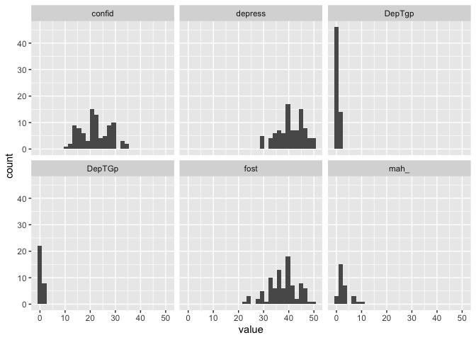
Look at that, suddenly we have a histogram for each of the variables!
What we did there was “Take the data in eData_tall and plot value on the x-axis, make histograms of that, and create different facets (panels) using the information in colName”.
Now we also see that apparently there was a naming inconsistency with the DepTgp variables, where one was typed as Gp instead of gp.
We will fix that before we continue.
eData_tall <- eData %>%
gather(colName, value, matches("[123]")) %>%
mutate(time = parse_number(colName),
colName = gsub("[[:digit:]]","",colName),
colName = gsub("Gp", "gp", colName, ignore.case = FALSE))
## Warning: attributes are not identical across measure variables;
## they will be dropped
I’ve added another line to our mutate function, saying to replace any instance of “Gp”, and “gp” and to make sure to do this as case sensitive.
Let’s see if our plot looks better now:
eData_tall %>%
ggplot(aes(x=value)) +
geom_histogram() +
facet_wrap(~colName)
## `stat_bin()` using `bins = 30`. Pick better value with `binwidth`.
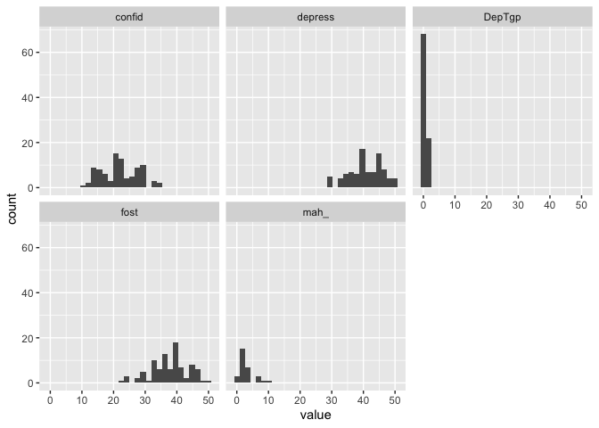
We can build more on that, because we also have the time variable, we can create a facet grid with histograms for each variable at each timepoint very easily
eData_tall %>%
ggplot(aes(x=value)) +
geom_histogram() +
facet_grid(colName~time)
## `stat_bin()` using `bins = 30`. Pick better value with `binwidth`.
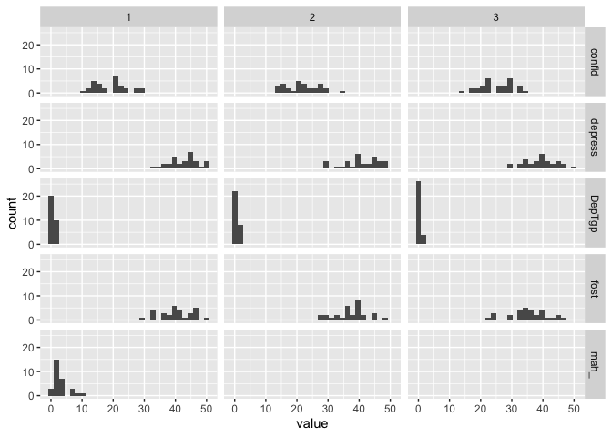
I think that’s pretty neat. We can do that because the data is in long format, and everything is contained in just some few columns, and ggplot can therefore make some nice plots out of, rather than having to tell it about the 5 different columns the data would otherwise be in (one for each variable). Distribution plots might not be the most interesting though, let’s look at a plot more similar like the one we did before, scatter plot with a regression line.
The basic’s are pretty much the same as above:
eData_tall %>%
ggplot(aes(x=time, y=value)) +
geom_jitter() +
geom_smooth(method = "lm") +
facet_wrap(~colName)
## `geom_smooth()` using formula 'y ~ x'
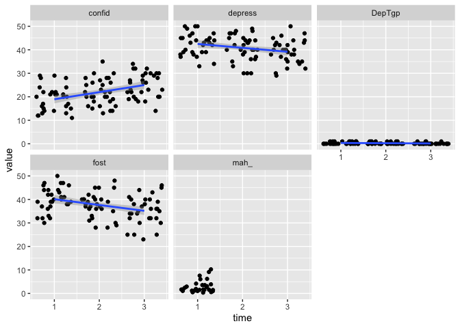
That’s looking much as expected!
And we can see that mah_ only has observations at one timepoint, so you would not be able to fit a regression line with that.
It’s no matter for us now.
Since we are interested to have a look across time, we might as well omit mah_ from the plot.
We want the data to remain in the main data, but just not to plot it.
eData_tall %>%
filter( colName != "mah_") %>%
ggplot(aes(x=time, y=value)) +
geom_jitter() +
geom_smooth(method = "lm") +
facet_wrap(~colName)
## `geom_smooth()` using formula 'y ~ x'
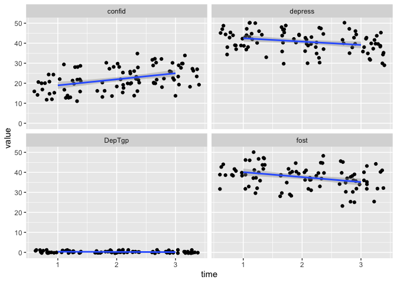
Now, we added a filter before we did ggplot.
Here we are going “Take eData_tall and filter away any rows where the value in colName is mah_, then make this ggplot”.
DepTgp is showing some odd behaviour though.
It only has values of 0 and 1, and here indicates belonging to a treatment group or not.
In R, we would call that variable a logical, i.e. it is a variable indicating if some statement is TRUE (1) or FALSE (0).
A standard regression makes no sense in this case.
Let’s also filter away these, as they are not interesting here, just like we did with mah_.
eData_tall %>%
filter( ! colName %in% c("mah_", "DepTgp")) %>%
ggplot(aes(x=time, y=value)) +
geom_jitter() +
geom_smooth(method = "lm") +
facet_wrap(~colName)
## `geom_smooth()` using formula 'y ~ x'
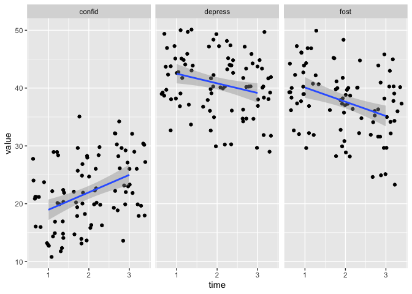
The filter now looks a little different than before.
Rather than a != (not equal to), we are using %in% and negating that (!) in front of the statement.
%in% is a nice matching shortcut in R, that is vectorised.
What that means is that rather than just taking one value to match against (like != or ==), it can take a series of values to match against.
In this case we are going “Take eData_tall and filter away any rows where the value in colName is eiter mah_ or DepTgp, then make this ggplot”.
Those plots are starting to look very nice. Let us also add some spaghetti in the background. By that I mean,let’s connect the subject data points with lines, so we can see the individual trends in the background of the refression. This should also give us an idea whether there are datapoints that behave oddly over time.
eData_tall %>%
filter( ! colName %in% c("mah_", "DepTgp")) %>%
ggplot(aes(x=time, y=value)) +
geom_jitter() +
geom_line(aes(group=id)) +
geom_smooth(method = "lm") +
facet_wrap(~colName)
## `geom_smooth()` using formula 'y ~ x'
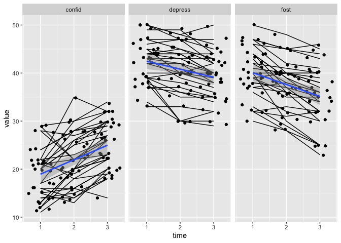
That is looking very odd.
The points and the lines are not connecting.
That is beause we are using geom_jitter, which generates a little random noise for us so the dots don’t plot on top of each other and in very very straight lines.
But this happens independently from geom_line, so the dots and lines dont know where they should connect.
We can fix that,and I’ll break the process down, hopefully to make it understandable.
First, let’s replace geom_jitter with geom_point and see what happens.
eData_tall %>%
filter( ! colName %in% c("mah_", "DepTgp")) %>%
ggplot(aes(x=time, y=value)) +
geom_point() +
geom_line(aes(group=id)) +
geom_smooth(method = "lm") +
facet_wrap(~colName)
## `geom_smooth()` using formula 'y ~ x'
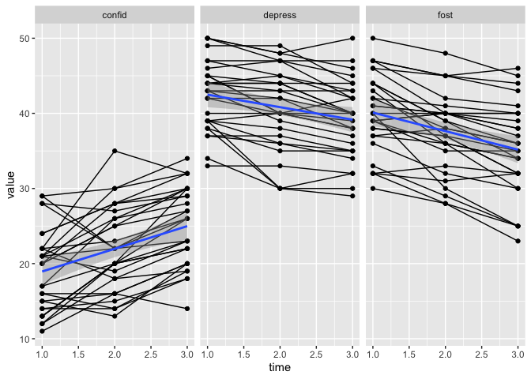
The dots and lines are connecting, good. Overplotting in this case is actally not too bad, in many cases like this, I’d leave it be. But, I mostly have data with many more points, and so I need to find a way to reduce overplotting.
We will be using the ggplot2’s function position_dodge to introduce noise to both the lines and the points.
We will also need to make sure both the lines and the dots have the correct group setting, letting ggplot know that lines and dots are grouped by id, meaning that data with the same values in id belong together.
eData_tall %>%
filter( ! colName %in% c("mah_", "DepTgp")) %>%
ggplot(aes(x=time, y=value)) +
geom_point(aes(group=id), position = position_dodge(width=.5)) +
geom_line(aes(group=id), position = position_dodge(width=.5)) +
geom_smooth(method = "lm") +
facet_wrap(~colName)
## `geom_smooth()` using formula 'y ~ x'
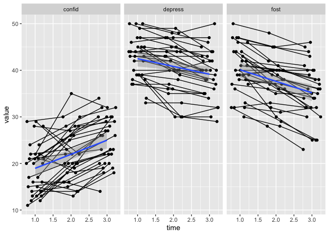
See, now there is a little more space between the points so you can see them all, but everything still connects correctly. The lines and points are a little too domineering , so let’s reduve their opacity/transparency, byt reducing the àlpha` setting for those two geoms.
dodge <- position_dodge(width = .5)
eData_tall %>%
filter( ! colName %in% c("mah_", "DepTgp")) %>%
ggplot(aes(x=time, y=value)) +
geom_line(aes(group=id), position = dodge, alpha = .2) +
geom_point(aes(group=id),position = dodge, alpha = .2) +
geom_smooth(method = "lm") +
facet_wrap(~colName)
## `geom_smooth()` using formula 'y ~ x'
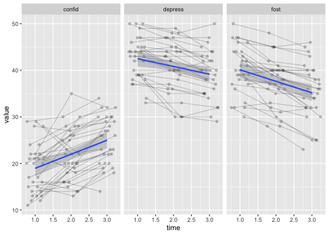
When we adjust the alpa, we can also see that there still is some overplotting.
This is because we cannot create noise in the y-axis, that would be akin to data-manipulation, we should not enter noise in the obsvered measurements.
But the alpa helps us see that, and now the regression line is a little more obious too.
The last thing for today, is changing the regression lines and CI band colour, to make it “pop” more.
dodge <- position_dodge(width = .5)
eData_tall %>%
filter( ! colName %in% c("mah_", "DepTgp")) %>%
ggplot(aes(x=time, y=value)) +
geom_line(aes(group=id), position = dodge, alpha = .2) +
geom_point(aes(group=id),position = dodge, alpha = .2) +
geom_smooth(method = "lm", colour = "forestgreen", fill = "forestgreen") +
facet_wrap(~colName)
## `geom_smooth()` using formula 'y ~ x'
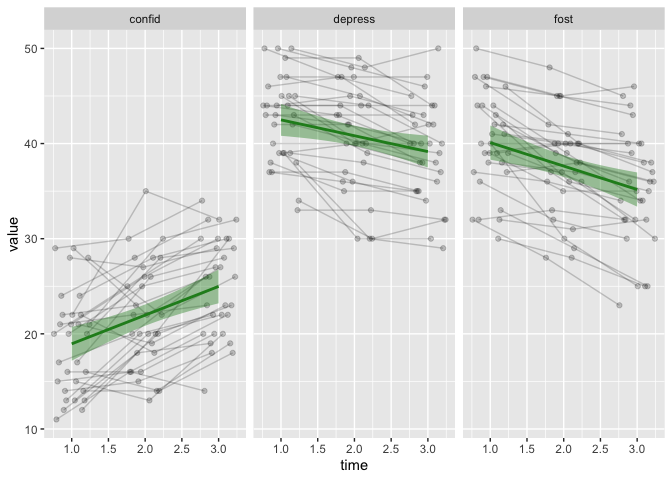
In this case, altering the colour is very easy, because we set the colour (line) and fill (CI band) to be a single value (not within aes).
By setting the colour like this, all panels get the same.
We could also use the colName variable to give each panel it’s own colour.
dodge <- position_dodge(width = .5)
eData_tall %>%
filter( ! colName %in% c("mah_", "DepTgp")) %>%
ggplot(aes(x=time, y=value)) +
geom_line(aes(group=id), position = dodge, alpha = .2) +
geom_point(aes(group=id),position = dodge, alpha = .2) +
geom_smooth(method = "lm", show.legend = FALSE,
aes(colour=colName, fill=colName)) +
facet_wrap(~colName)
## `geom_smooth()` using formula 'y ~ x'
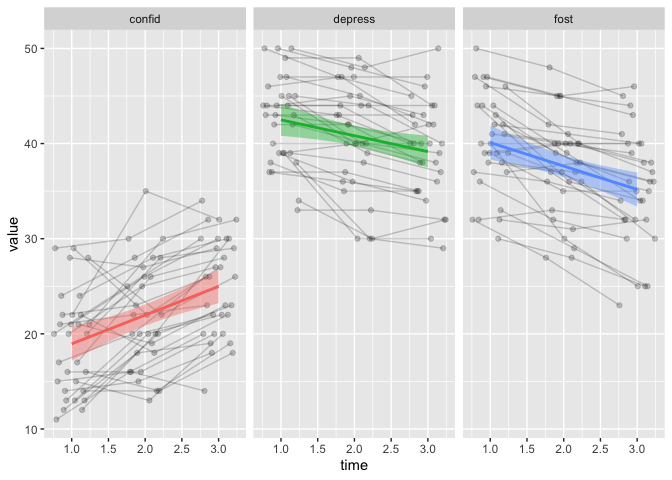
that is pretty neat, right?
That’s all for this time. We’re explored more plots, and ways to change the data, so it becomes easy to plot in this faceted way.
Next time, we will be working on changing factors and factor levels both to make the data correctly portray what it should, and also to help us make our plots meaningful.
2019-r-for-psychologists-part-ii,
author = "DrMowinckels",
title = "R for Psychologists - part II",
url = "https://drmowinckels.io/blog/2019/r-for-psychologists-part-ii/",
year = 2019,
doi = "https://www.doi.org/10.5281/zenodo.13273492",
updated = "Oct 7, 2024"
}